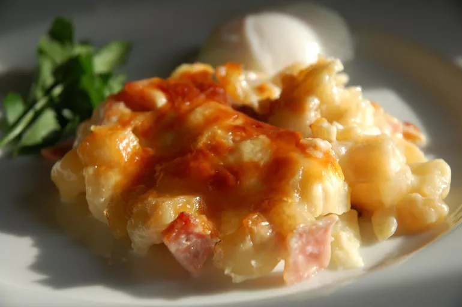

Cheesy Ham and Hashbrown Casserole

Description
This ham and hash brown casserole is quick and easy to make, not to mention delicious! I mostly serve this as a breakfast casserole, but it's great anytime!
Ingredients
- cooking spray
- 1 (32 ounce) package frozen hashbrowns
- 2 (10.5 ounce) cans condensed cream of potato soup
- 1 (16 ounce) container sour cream
- 2 cups shredded sharp cheddar cheese
- 8 ounces cooked, diced ham
- 1 1/2 cups grated Parmesan cheese